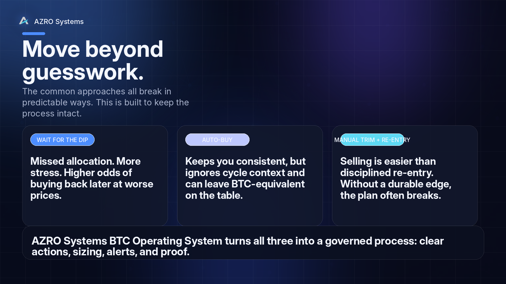
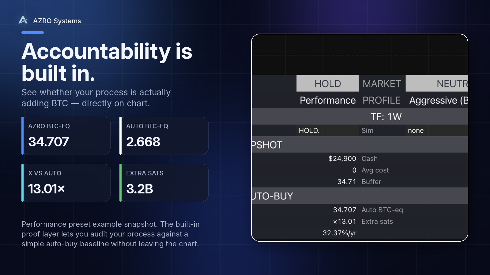
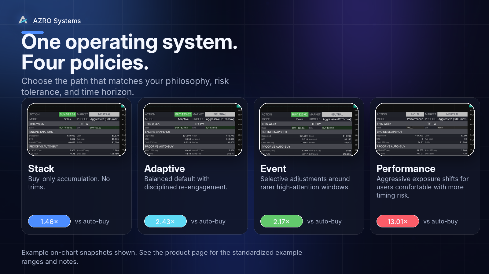
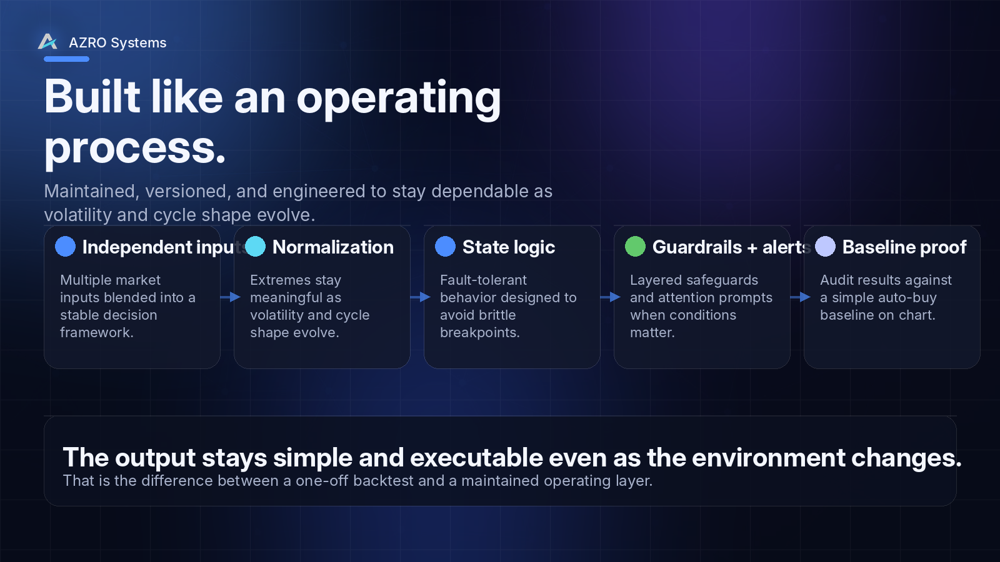

Features built for disciplined execution.
Two tools, one rules-first mindset: weekly clarity, readable outputs, and a workflow you can actually follow.
Move beyond guesswork.
The common approaches all break in predictable ways. This is built to keep the process intact.
- Waiting for a perfect dip usually becomes missed allocation
- Auto-buy keeps you consistent, but ignores cycle context
- Manual trims often fail because disciplined re-entry is the hard part

Everything you need. Nothing you don’t.
The chart stays clean. The decision lives in the dashboard.
- Action + amount in one place
- Market context visible without extra overlays
- Alerts surface attention only when it matters
- Proof vs auto-buy stays on-chart, not in a spreadsheet

Accountability is built in.
See whether your process is actually adding BTC — directly on chart.

One operating system. Four policies.
Choose the path that matches your philosophy, risk tolerance, and time horizon.
- Stack — buy-only accumulation
- Adaptive — balanced default with disciplined re-engagement
- Event — selective adjustments around rarer high-attention windows
- Performance — aggressive BTC-eq preset for users comfortable with more timing risk

Built like an operating process.
Maintained, versioned, and engineered to stay dependable as volatility and cycle shape evolve.
- Independent inputs blended into a stable framework
- Normalization so extremes stay meaningful as the market evolves
- Fault-tolerant state logic, guardrails, and alerts
- Simple output that remains executable even as the environment changes

Cycle confirmation labels for XRP.
A proof-first weekly workflow built around confirmations, optional context, and alert-ready structure.

Core label suite
MAJOR, RADAR, LIGHT, EARLY, and risk markers built for a weekly-close workflow.
Weekly-close confirmations
Designed to matter on the weekly close instead of feeding intra-week noise.
Optional context overlays
EMA Cloud, RSI zones, MACD, and ROI pop-ups help frame regime context.
Alert-ready
Set TradingView alerts so you don’t need to watch the chart all day.
Works on free TradingView
You can run the indicator without a paid TradingView plan and still get the full workflow.
Readable by design
Information density is controlled so the chart stays usable, not overwhelming.
Need both markets covered?
The bundle gives you BTC Operating System plus the XRP Top/Bottom Detector under one rules-first workflow.